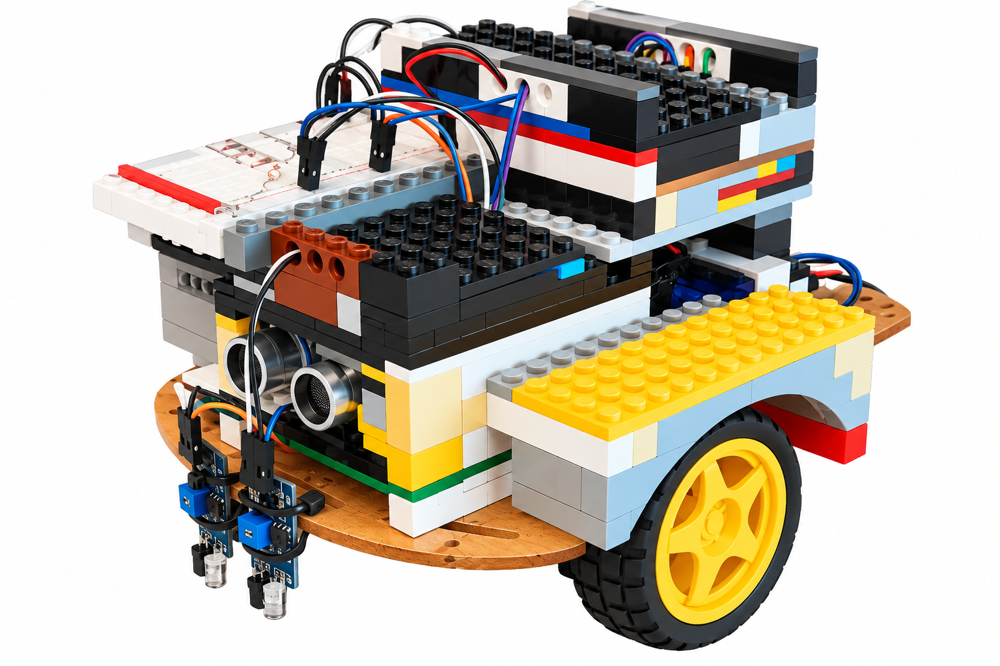

UNIVERSITY PROJECT · SEP—DEC 2025
Pizza-delivering car
A small vehicle designed to carry and deliver a pizza using a mechanical drop mechanism. I contributed to the overall design and worked on the mechanism alongside a team building the vehicle’s Arduino, sensor, and motor functionality.
MY CONTRIBUTION
Mechanical design · Pizza-dropping mechanism · Team problem-solving
Mechanical designArduinoSensors & motors